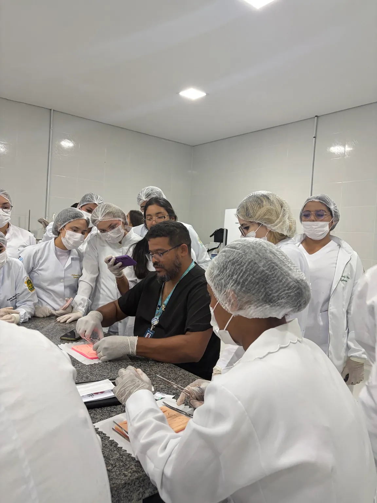

Curso de
Sutura.
Conhecimento que aproxima você da prática.
Uma experiência de extensão com Dr. Ulysses Moura, em ambiente de simulação.

Um novo ponto na formação.
O Curso de Sutura reuniu participantes para uma experiência de aprendizagem com orientação e prática em simuladores. A edição aconteceu em 15 de outubro de 2026, no Laboratório de Tecnologia Farmacêutica da Estácio Turu.
As atividades tiveram finalidade acadêmica e de extensão, com foco na aproximação entre os conhecimentos teóricos e o treinamento em ambiente simulado.
Três turnos, a mesma experiência.
Local da atividade
Laboratório de Tecnologia Farmacêutica · Estácio Turu
Avenida São Luís Rei de França, nº 19 · Turu, São Luís, MA.
Acesso pelo bloco C, no corredor da saída de emergência, próximo ao bebedouro.
Orientações da edição
- Roupa e sapato brancos e jaleco obrigatórios.
- EPIs e insumos fornecidos pela LAUTE.
- Registro de presença pela organização.
- Certificado acessível com código de inscrição e e-mail, após a liberação.
Formação acadêmica com responsabilidade.
O curso é de extensão e não confere habilitação profissional, nem autoriza a realização de suturas em pacientes. O exercício profissional depende da formação, do registro e das normas aplicáveis a cada profissão.
Para quem foi esta edição?
Estudantes de graduação e profissionais graduados em Enfermagem, Odontologia, Medicina, Medicina Veterinária, Estética e Cosmética e Perícia, conforme os critérios divulgados para o curso.
Reviva os registros da atividade